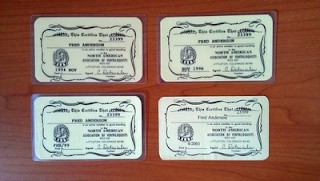

NAAV memories...
7/23/2012
From Russell Baker: I wanted to let you know how useful my old copies of the NAAV newsletters (Newsy Vents) still are. I still enjoy looking through my back issues at some of the tips of other ventriloquists offered. It's always neat to hear what more experienced ventriloquists have to say.
* * * *
From Fred Anderson:
I was going through some old files and came across these (NAAV membership cards).
Guess some memories are just too fond to throw away.
* * * * *
From Mr. D: It does my heart good to know the sight of your past NAAV membership cards and issues of Newsy Vents spark enough fond memories that you want to keep them! They do the same for me - and perhaps even more so for Adelia, for it was her responsibility to record membership dues, maintain the newsletter mailing list, make out and mail the member's cards, etc. There are times when we miss those days, but just now as I'm writing this and recalling the work involved - not so much. Ha. Thank you for sharing!
* * * *
From Fred Anderson:
{kind=link}

I was going through some old files and came across these (NAAV membership cards).
Guess some memories are just too fond to throw away.
* * * * *
From Mr. D: It does my heart good to know the sight of your past NAAV membership cards and issues of Newsy Vents spark enough fond memories that you want to keep them! They do the same for me - and perhaps even more so for Adelia, for it was her responsibility to record membership dues, maintain the newsletter mailing list, make out and mail the member's cards, etc. There are times when we miss those days, but just now as I'm writing this and recalling the work involved - not so much. Ha. Thank you for sharing!